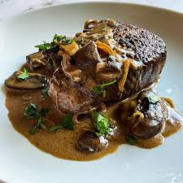

Steak Diane

Description:
Steak Diane was a staple on menus in fine dining establishments back in the day. Prepared tableside where the server ignited the cognac, it was an impressive sight. You don't need to flame the cognac; just keeping it on the heat will eventually evaporate the alcohol. But be careful--it can still flare up if the heat's high enough when you're reducing the sauce.
Ingredients:
Sauce:
- 1/2 cup demi-glace
- 1 tablespoon Dijon mustard
- 2 teaspoons Worcestershire sauce
- 1 teaspoon tomato paste
- 1 pinch cayenne pepper
Steaks:
- 2 teaspoons vegetable oil
- 2 (8 ounce) beef tenderloin steaks, fully trimmed, pounded to 1/2 inch thick
- Kosher salt and freshly ground black pepper, to tase
- 1 tablespoon unsalted butter, cut into small chunks
- 3 tablespoons shallot, minced
- 1/4 cup Cognac or brandy
- 1/4 cup heavy cream
- 2 teaspoons slice fresh chives
Steps
- Season steaks generously on both sides with salt. Allow steaks to come to room temperature while you make the sauce.
- Stir together demi-glace (see Cook's Note), mustard, Worcestershire sauce, tomato paste, and cayenne pepper in a bowl.
- Heat oil in a skillet over very high heat, swirling carefully to evenly cover surface. When oil reaches a smoking point, transfer steaks to oil; add a few chunks of butter. Sear meat on high heat until brown on each side, 2 to 3 minutes per side; keep them on the rare side. An instant-read thermometer inserted into the center should read 125 degrees F (52 degrees C). Transfer steaks to a warm plate.
- Stir shallots into skillet; cook until softened, 2 to 3 minutes. Remove skillet from heat; pour in Cognac. Carefully ignite with a fireplace lighter. When alcohol burns off and flames go out, return skillet to high heat and bring to a boil; cook, stirring, a few minutes to reduce slightly. Add demi-glace mixture, cream, and any accumulated juices from the steak. Cook on high heat just until sauce starts to thicken, 3 to 5 minutes. Transfer steaks back to pan and reduce heat to low. Gently simmer until meat is heated through and cooked to your desired level of doneness.
- Transfer to hot plates and serve with a generous spoonful or two of sauce. Sprinkle with chives.
- Serve and enjoy!
Chef's Notes
You can use top sirloin steaks instead of tenderloin steaks. You can substitute 2 cups of a rich, low-sodium or salt-free chicken broth for the 1/2 cup of demi-glace, but it will take longer to reduce.
You don't need to flame the cognac as the alcohol will evaporate as it cooks on the stove. But be careful — it can still flare up if the heat is high enough when you're reducing the sauce.
Home